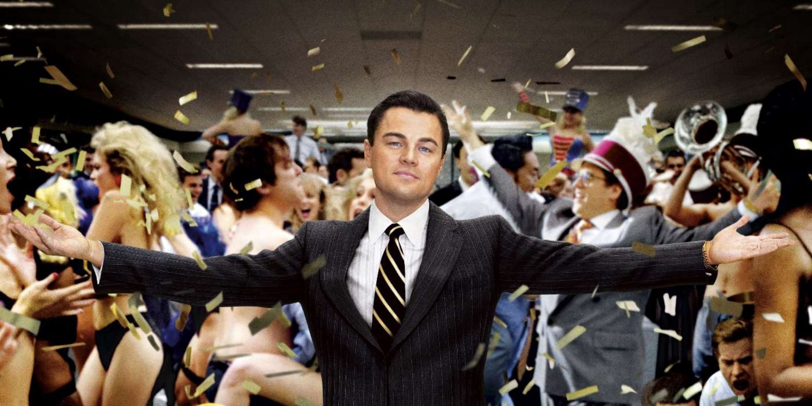
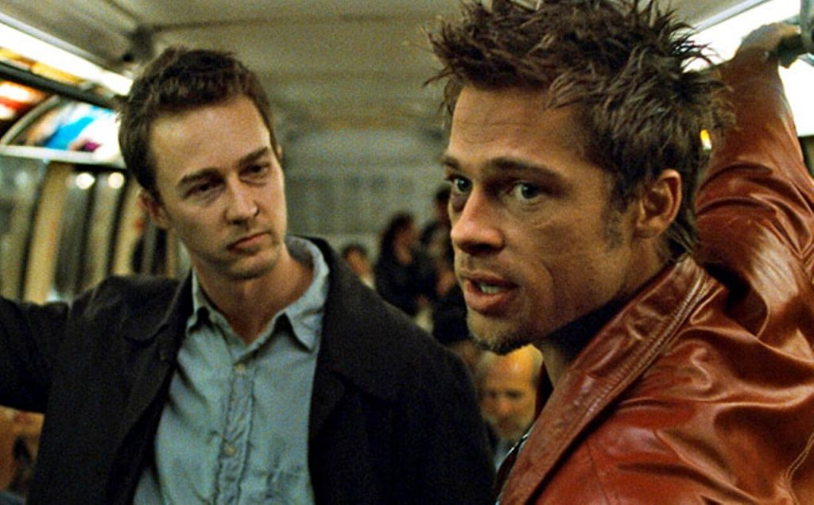
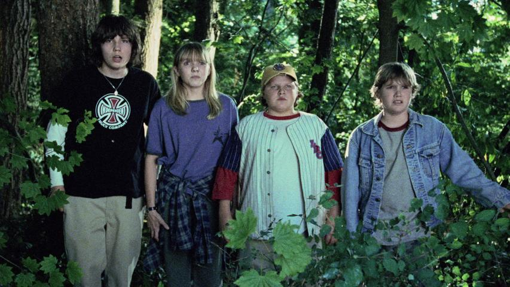
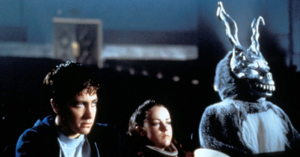
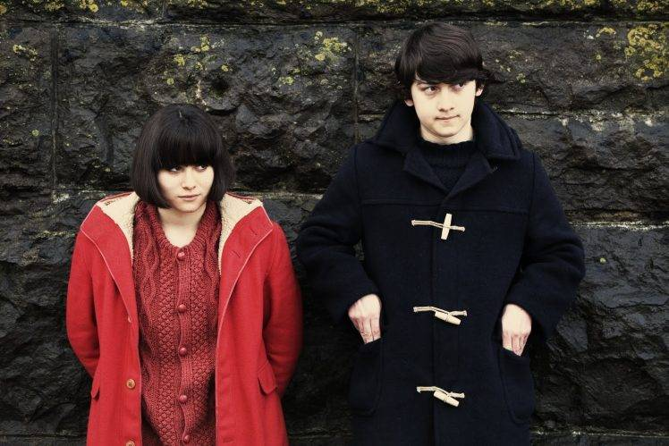

O lobo de Wall Street
Jordan Belfort é um ambicioso corretor da bolsa de valores que cria um verdadeiro império, enriquecendo de forma rápida, porém ilegal. Ele e seus amigos mergulham em um mundo de excessos, mas seus métodos ilícitos despertam a atenção da polícia.
Clube da Luta
Um homem deprimido que sofre de insônia conhece um estranho vendedor chamado Tyler Durden e se vê morando em uma casa suja depois que seu perfeito apartamento é destruído. A dupla forma um clube com regras rígidas onde homens lutam.
Efeito Borboleta
O estudante universitário Evan Treborn está aflito com dores de cabeça tão fortes que frequentemente desmaia. Enquanto está inconsciente, Evan pode viajar de volta no tempo para momentos de dificuldades na infância. Ele também pode alterar o passado para os amigo. Porém ao mudar o passado, ele pode alterar o presente, o que leva Evan a se encontrar em um pesadelo de realidades alternativas, incluindo uma onde ele está preso.
Donnie Darko
Donnie é um jovem excêntrico que despreza a grande maioria de seus colegas de escola. Ele tem visões, em especial de Frank, um coelho gigante que só ele consegue ver e que o encoraja a fazer brincadeiras humilhantes com quem o cerca. Um dia, uma de suas visões o atrai para fora de casa e lhe diz que o mundo acabará dentro de um mês
Submarine
Oliver tem 15 anos e, assim como os garotos da sua idade, luta contra a timidez para seduzir uma colega de colégio, Jordana. Mas ele também tem outro objetivo: reconstruir a destruída vida sexual dos seus pais.